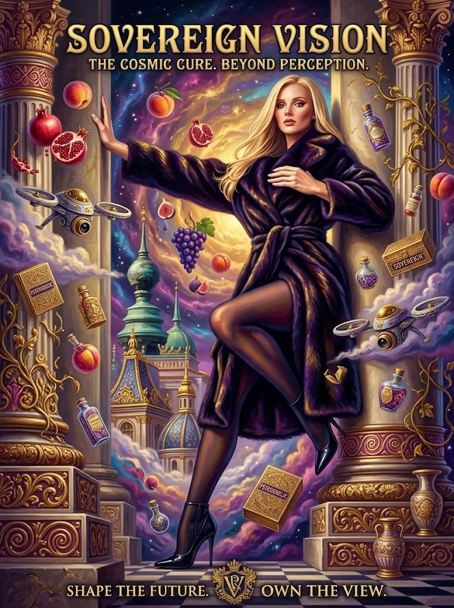

Sovereign · 01
Sovereign Vision
La cura cosmica, oltre la percezione
Una dea in pelliccia scende la scalinata di un tempio che è anche un set fotografico. Colonne corinzie, melagrane che colano, fiale di profumo, droni da sorveglianza: la réclame di lusso degli anni Settanta spinta fino al punto in cui il prodotto non esiste più e resta solo la promessa. Classico nell'ossatura, psichedelico nel colore, pubblicitario nel sorriso.